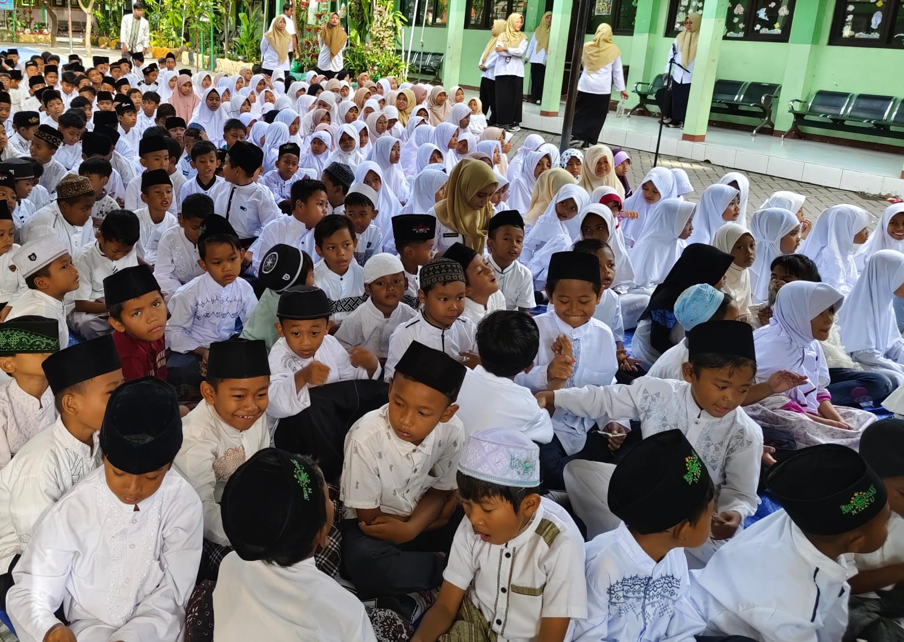
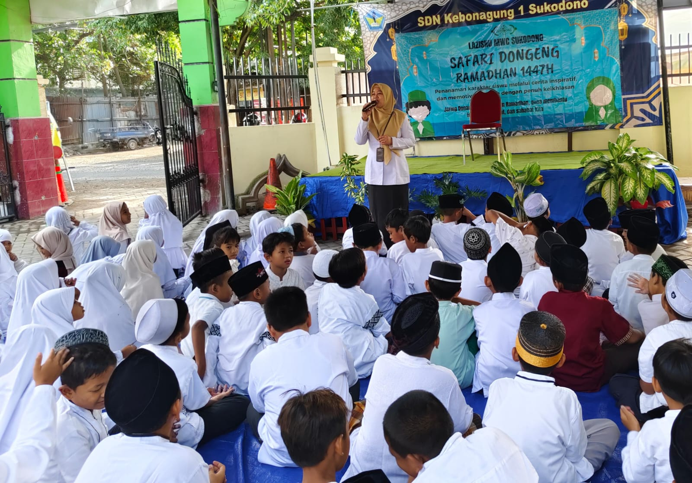
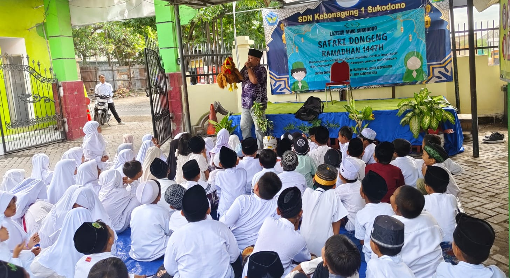
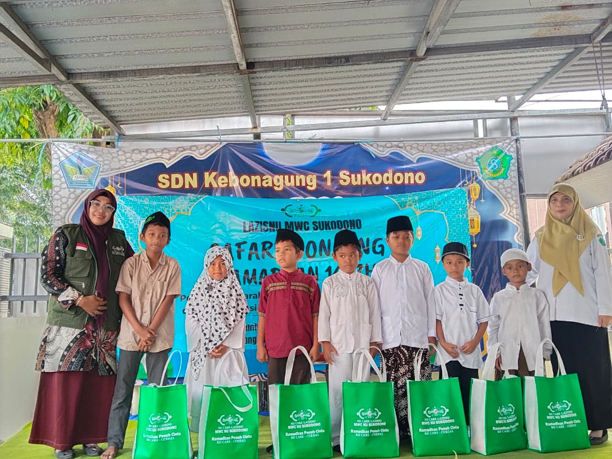

Kegiatan pembukaan Pesantren Ramadan di SDN Kebonagung 1 Sukodono berlangsung dengan penuh khidmat dan kemeriahan pada Rabu (25/2/2026). Mengusung tema "Penanaman Karakter Melalui Cerita Inspiratif dan Motivasi Ibadah dengan Penuh Keikhlasan", acara ini diikuti seluruh siswa dengan antusias dan keceriaan.

📿 Tema Kegiatan
"Penanaman Karakter Melalui Cerita Inspiratif dan Motivasi Ibadah dengan Penuh Keikhlasan"
Rangkaian Pembukaan
Kegiatan diawali dengan menyanyikan lagu Indonesia Raya dengan merdu dan penuh khidmat. Suara ribuan siswa dan guru bersatu dalam harmoni yang indah, mengisi seluruh lapangan sekolah dengan semangat nasionalisme dan cinta tanah air. Setiap nada yang terucap mencerminkan kebanggaan dan dedikasi mereka untuk Indonesia.
Setelah lagu Indonesia Raya selesai, suasana pun berubah menjadi lebih khidmat. Seluruh peserta berdiri dengan penuh hormat, mempersiapkan hati dan jiwa untuk melangsungkan istighosah bersama.
.jpeg)
Acara dilanjutkan dengan istighosah yang dipimpin oleh Komite Sekolah. Suasana menjadi semakin khusyuk dan penuh ketaqwaan ketika para siswa bersama guru melantunkan doa dan wirid bersama, dengan irama yang indah dan penuh makna spiritual. Semua peserta memanjatkan doa tulus ke hadirat Allah SWT, memohon keberkahan, kelancaran, dan hidayah dalam menjalankan ibadah di bulan suci Ramadan. Terlihat dari wajah-wajah yang tenang, hati yang terharu, dan mata yang berkilauan dengan cahaya iman, menunjukkan bahwa setiap doa yang diucapkan berasal dari lubuk hati yang paling dalam.


Sambutan Kepala Sekolah
Ibu Mei Ernawati, S.Pd., M.Pd
Setelah itu sambutan dan pembukaan Pesantren Ramadan oleh Kepala Sekolah SDN Kebonagung 1 Sukodono Ibu Mei Ernawati, S.Pd., M.Pd yang menyampaikan pentingnya Pesantren Ramadan sebagai momentum pembentukan karakter peserta didik.
Dalam sambutannya, beliau menekankan bahwa bulan Ramadan bukan hanya tentang menahan lapar dan dahaga, tetapi juga melatih kejujuran, kedisiplinan, serta meningkatkan keikhlasan dalam beribadah.
"Melalui kegiatan Pesantren Ramadan ini, kami berharap anak-anak tidak hanya memahami nilai-nilai keislaman secara teori, tetapi juga mampu mengamalkannya dalam kehidupan sehari-hari."
— Ibu Mei Ernawati, S.Pd., M.Pd
.jpg)
Safari Dongeng Bersama LAZISNU
Kolaborasi
Kemeriahan acara semakin terasa dengan adanya kerja sama bersama LAZISNU dalam rangkaian kegiatan Safari Dongeng. Dalam sesi ini, para siswa diajak menyimak dongeng islami yang sarat pesan moral, nilai kejujuran, semangat berbagi, dan motivasi untuk rajin beribadah.
Santunan Anak Yatim

Kegiatan juga diisi dengan santunan kepada anak yatim sebagai bentuk kepedulian sosial dan wujud kasih sayang terhadap sesama.
Penggalangan Dana
Dana yang terkumpul dari penggalangan seluruh warga sekolah akan disalurkan untuk kegiatan sosial dan membantu sesama yang membutuhkan.
💬 Testimoni Siswa
"Dongengnya seru dan lucu, jadi ingin lebih rajin salat dan puasa!"
— Salah satu siswa dengan penuh semangat
✨ Nilai-Nilai Karakter yang Ditanamkan
Empati
Keikhlasan
Tanggung Jawab
Semangat Berbagi
Penutup
Dengan terselenggaranya kegiatan ini, diharapkan nilai-nilai karakter seperti empati, keikhlasan, tanggung jawab, dan semangat berbagi dapat tertanam kuat dalam diri siswa sejak dini. Pembukaan Pesantren Ramadan di SDN Kebonagung 1 Sukodono pun menjadi awal yang penuh makna dalam menyambut bulan suci dengan semangat kebersamaan dan kebaikan.